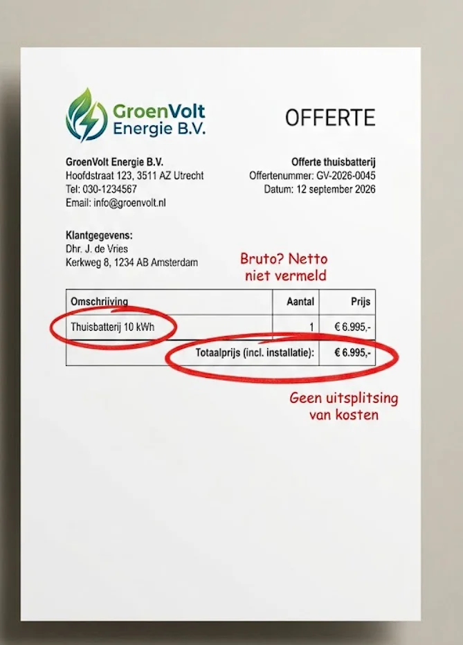
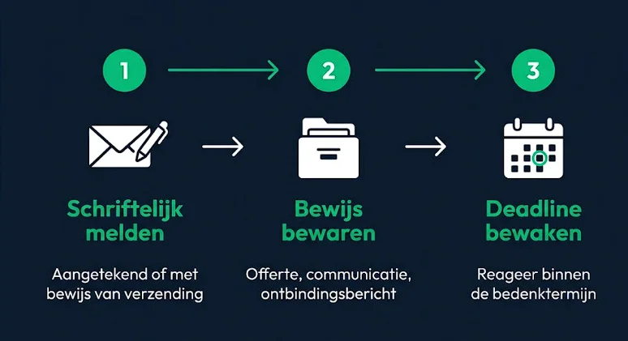
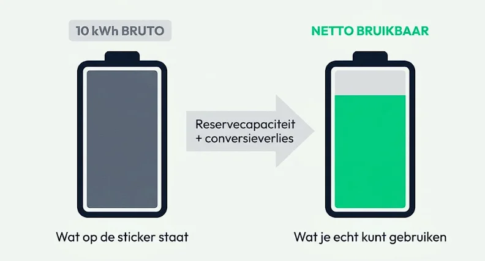

💡 Twijfel je over een offerte?
Reken zelf na of de beloofde terugverdientijd realistisch is, onafhankelijk van wat de verkoper zegt
Reken je eigen situatie na → Gratis · Onafhankelijk · Geen aanmelding nodig📋 Inhoud van dit artikel
De explosie van agressieve thuisbatterij-verkoop
Nu de salderingsregeling op 1 januari 2027 stopt, krijgen veel zonnepaneeleigenaren aanbiedingen voor een thuisbatterij. De financiële waarde van teruglevering verandert na 2027, en sommige verkopers gebruiken dat om haast te creëren. Misleidende thuisbatterij-verkoop herken je het snelst door nooit op het verhaal van de verkoper af te gaan, maar altijd te vragen hoe een berekening precies is opgebouwd.
Vereniging Eigen Huis (VEH) opende in augustus 2026 een meldpunt voor huiseigenaren die misleiding ervaren bij verduurzamingsproducten, waaronder thuisbatterijen, zonnepanelen en warmtepompen. VEH zegt zelf steeds meer meldingen te ontvangen, zonder daarbij concrete aantallen te noemen. Controleer daarom elk aanbod met dezelfde nuchtere checklist, ongeacht hoe overtuigend het klinkt.
10 rode vlaggen bij een thuisbatterij-offerte
Deze signalen zijn op zichzelf niet altijd bewijs van oplichterij, maar hoe meer ervan van toepassing zijn op jouw aanbod, hoe voorzichtiger je moet zijn.
De verkoper zegt te bellen of langs te komen "namens de overheid" of "namens jouw netbeheerder". Controleer dit altijd zelfstandig: vraag naar naam, organisatie en een schriftelijke bevestiging voordat je gegevens deelt of tekent.
Je moet vandaag nog tekenen om van een "eenmalige actieprijs" of "laatste voorraad" te profiteren.
De offerte noemt alleen de bruto (marketing-)capaciteit in kWh, zonder de werkelijk bruikbare netto-capaciteit te specificeren.
Er wordt niets gezegd over conversieverlies tussen DC (batterij) en AC (je stopcontact), terwijl dat verlies optreedt bij zowel het laden als het ontladen.
De beloofde terugverdientijd klinkt opvallend kort in vergelijking met onafhankelijke bronnen, zonder dat de verkoper zijn aannames (stroomprijs, cycli per jaar) kan onderbouwen.
De offerte geeft geen uitgesplitste kostenopbouw (apparaat, installatie, bekabeling, meterkast-aanpassingen apart), maar alleen één totaalbedrag.
Je wordt gevraagd om een hoge aanbetaling vooraf te doen, ruim voordat er iets geïnstalleerd is.
Er staat geen schriftelijke garantietermijn op papier, alleen mondelinge beloftes.
Het bedrijf is niet te controleren via een KVK-nummer of BTW-identificatienummer op de offerte of website.
Er wordt druk uitgeoefend met vage verwijzingen naar een "aflopende subsidie" of "beperkte voorraad", zonder dat je dit ergens onafhankelijk kunt natrekken.

Fictief voorbeeld, ter illustratie. Geen echte klant- of bedrijfsgegevens.
Twijfel je nog steeds? Vergelijk eerst het type batterij, de installatiekosten, de bruikbare capaciteit en je eigen verbruik: een plug-in batterij en een vast geïnstalleerd systeem verschillen daarin flink, en in sommige situaties is een batterij financieel minder aantrekkelijk dan verwacht. Beide zijn het waard om te checken vóórdat je met een verkoper verdergaat.
Al getekend onder druk? Dit zijn je rechten
De wettelijke bedenktijd
Bij verkoop op afstand (telefonisch, online) of bij verkoop aan de deur (colportage) geldt in de regel een wettelijke bedenktijd van 14 dagen. Binnen die termijn kun je de koop zonder opgave van reden ontbinden. Er bestaan uitzonderingen, bijvoorbeeld als je zelf uitdrukkelijk toestemming hebt gegeven om al tijdens de bedenktijd met de installatie te beginnen. Vraag in dat geval vooraf schriftelijk na welke kosten bij ontbinding kunnen gelden en wanneer het herroepingsrecht precies vervalt. De precieze voorwaarden verschillen per situatie, controleer ze daarom altijd bij ACM ConsuWijzer voordat je uitgaat van deze termijn.
Hoe je ontbindt: stappenplan

- Meld schriftelijk dat je de koop ontbindt, bij voorkeur aangetekend of met een ander bewijs van verzending (bijv. een e-mail met leesbevestiging).
- Bewaar alles: de offerte, alle communicatie met de verkoper en het bewijs van jouw ontbindingsbericht.
- Houd de deadline in de gaten: reageer binnen de bedenktermijn, wacht niet tot de laatste dag.
Twijfel je of je situatie onder de bedenktijd valt, of loopt de verkoper de deadline niet na? Neem contact op met ACM ConsuWijzer of Vereniging Eigen Huis voor advies.
Reken zelf: netto vs bruto capaciteit in de praktijk

Een veelgebruikte manier om een batterij aantrekkelijker te laten lijken dan hij is: adverteren met de bruto capaciteit in plaats van de netto, werkelijk bruikbare capaciteit. Het verschil ontstaat door twee dingen:
- Een reservecapaciteit die het systeem aanhoudt om de batterijcellen te beschermen en de levensduur te verlengen.
- Conversieverlies tussen DC (in de batterij opgeslagen stroom) en AC (stroom uit je stopcontact): dit verlies treedt op bij zowel het opladen als het ontladen van de batterij.
Let op: de exacte omvang van reservecapaciteit en conversieverlies verschilt per fabrikant en model. StekkerSlim vult hier bewust geen algemeen percentage in zonder een geverifieerde fabrikant-datasheet als bron, dat zou zelf misleidend zijn. Vraag dit specifieke getal altijd rechtstreeks aan de verkoper of in de productspecificaties.
Wil je weten wat een batterij in jouw situatie werkelijk oplevert, los van de claims van een verkoper? Simuleer eerst je daadwerkelijke batterij-rendement op basis van je eigen verbruiksdata, of gebruik de onafhankelijke thuisbatterij terugverdientijd-calculator.
Waar meld je misleidende energie-aanbieders?
Kreeg je te maken met agressieve verkoop, misleidende claims of ongewenste druk? Meld dit, ook als je uiteindelijk niet hebt getekend. Een melding leidt niet automatisch tot een individuele oplossing, maar helpt toezichthouders wel signalen te verzamelen.
- Vereniging Eigen Huis meldpunt: geopend in augustus 2026, voor klachten over agressieve en misleidende verkoop bij verduurzaming, waaronder zonnepanelen en thuisbatterijen.
- ACM ConsuWijzer: voor informatie over consumentenregels en het melden van mogelijke overtredingen, zoals agressieve verkoopmethoden en het niet respecteren van bedenktijd.
💡 Voordat je tekent
Reken het aanbod na met onze onafhankelijke thuisbatterij-calculator
Bereken jouw situatie → Gratis · OnafhankelijkVeelgestelde vragen
Hoeveel bedenktijd heb ik bij de aanschaf van een thuisbatterij?
Bij verkoop op afstand of aan de deur geldt in de regel een wettelijke bedenktijd van 14 dagen. De precieze voorwaarden en uitzonderingen (bijvoorbeeld als de installatie al gestart is met jouw toestemming) verschillen per situatie. Check de actuele regels bij ACM ConsuWijzer voordat je uitgaat van deze termijn.
Wat kan ik doen als ik onder druk een thuisbatterij-offerte heb getekend?
Binnen de bedenktijd kun je meestal schriftelijk (aangetekend of met bewijs van verzending) ontbinden, zonder reden op te geven. Bewaar de offerte, alle communicatie en het bewijs van ontbinding. Twijfel je, neem dan contact op met ACM ConsuWijzer of Vereniging Eigen Huis.
Hoe weet ik of de terugverdientijd op mijn offerte klopt?
Vraag naar de exacte aannames: netto (niet bruto) capaciteit, actuele stroomprijs, aantal cycli per jaar en installatiekosten. Reken het zelf na met een onafhankelijke tool, zoals de StekkerSlim-calculator, in plaats van het getal van de verkoper te vertrouwen.
Waar kan ik agressieve verkoop van een thuisbatterij melden?
Bij het meldpunt van Vereniging Eigen Huis (geopend augustus 2026) en bij ACM ConsuWijzer voor overtredingen van consumentenregels.
Bestaan er overheidssubsidies voor een gratis thuisbatterij?
Wees achterdochtig bij aanbiedingen die een "gratis" batterij beloven via een subsidie: dit is een veelgebruikte truc om vertrouwen te wekken. Controleer subsidieclaims altijd zelfstandig bij de Rijksoverheid, nooit alleen op het woord van de verkoper.